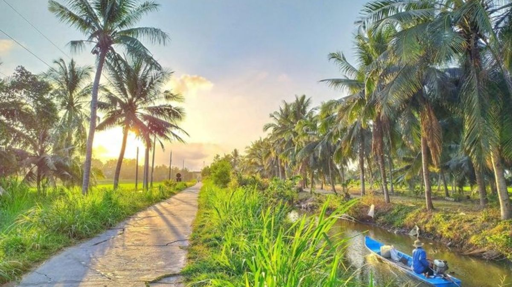
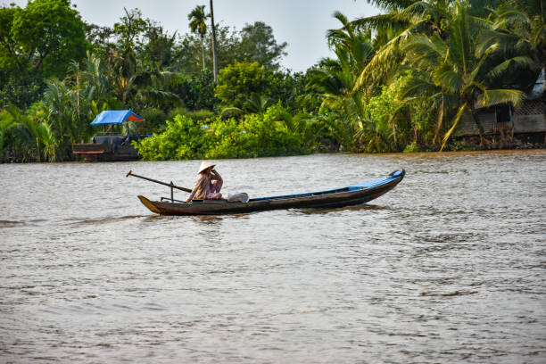

Hương Vị Đậm Đà Miền Sông Nước
Khám phá nền ẩm thực đặc sắc nơi quả dừa được biến tấu thành hàng trăm món ăn hấp dẫn, từ các bữa cơm gia đình đầm ấm đến những món quà quê nức tiếng gần xa.
Khám phá nền ẩm thực đặc sắc nơi quả dừa được biến tấu thành hàng trăm món ăn hấp dẫn, từ các bữa cơm gia đình đầm ấm đến những món quà quê nức tiếng gần xa.
 Độc Đáo Nhất
Độc Đáo Nhất
Gạo ngon được vo kỹ bằng nước dừa tươi ngọt lành, rồi cho trực tiếp vào bên trong trái dừa xiêm để chưng cách thủy. Hạt cơm chín dẻo, thơm ngát mùi cùi dừa, ăn kèm đĩa tôm đất rang nước cốt dừa mặn ngọt béo bùi thì ngon không gì sánh bằng.

Đệ Nhất Món NgonCủ hũ dừa là phần búp non nằm sâu trên đọt cây dừa, trắng muốt và giòn ngọt thanh tao. Món gỏi trộn củ hũ dừa bào sợi mỏng với tôm sông tươi luộc, thịt ba chỉ, đậu phộng rang, rau răm và nước mắm chua ngọt đặc sánh trứ danh.

Quà Tặng Nổi TiếngThương hiệu kẹo dừa trứ danh hơn 100 năm làm nên tên tuổi quê hương Bến Tre. Nước cốt dừa già nguyên chất được sên đều tay với mạch nha nếp dẻo quánh trên chảo lửa. Kẹo dừa ngày nay có rất nhiều hương vị: sầu riêng, lá dứa, đậu phộng, cacao...
 Món Đồng Quê
Món Đồng Quê
Cá lóc đồng tươi roi rói được xiên que tre từ miệng đến đuôi rồi cắm thẳng đứng xuống đất phủ rơm khô đốt cháy bùng. Khi rơm tàn, cạo nhẹ lớp vảy cháy đen lộ ra thớ thịt cá trắng ngần, thơm nồng khói rơm, cuốn bánh tráng rau rừng chấm mắm me chua cay.
 Bánh Dân Gian
Bánh Dân Gian
Bộ đôi bánh nướng nức tiếng xứ Dừa. Bánh tráng Mỹ Lồng thơm ngát nước cốt dừa và mè đen nướng trên bếp than hồng phồng xốp. Còn bánh phồng nếp Sơn Đốc giòn tan ngay đầu lưỡi, món quà quê không thể thiếu trong mỗi dịp Tết cổ truyền.
 Món Sông Nước
Món Sông Nước
Trái bần chín ven sông Tiền mang vị chua thanh mát đặc biệt, đem dầm nấu canh với cá ngát béo ngậy. Nồi canh chua bốc khói thơm lừng ăn kèm với bông so đũa, rau nhút, bắp chuối và đĩa nước mắm nhĩ ớt hiểm cay nồng.
 Độc Lạ
Độc Lạ
Món ăn độc nhất vô nhị chỉ có ở xứ sở dừa. Những con đuông dừa mập mạp, béo tròn được thả vào chén nước mắm ngon dầm ớt cay xè. Khi thưởng thức sẽ cảm nhận trọn vẹn vị béo ngậy như phô mai tươi bùng nổ trong khoang miệng.
 Thức Uống
Thức Uống
Đến xứ dừa thì không thể bỏ qua ngụm nước dừa xiêm ngọt lịm mát lạnh hái ngay trên cây. Bên cạnh đó, Rượu dừa được ủ lên men tự nhiên ngay trong gáo dừa già là món đồ uống đãi khách sang trọng và ấm cúng của người dân Bến Tre.
Lưu lại ngay những địa chỉ uy tín, được đông đảo du khách và người dân địa phương yêu thích
| Đặc Sản / Món Ăn | Địa Chỉ Gợi Ý | Mức Giá Tham Khảo | Ghi Chú |
|---|---|---|---|
| Kẹo dừa Bến Tre | Lò kẹo dừa Thanh Long, Ngọc Mai (Châu Thành & TP. Bến Tre) | 35.000đ - 60.000đ / hộp | Có thể xem quy trình làm kẹo trực tiếp tại lò |
| Bánh tráng Mỹ Lồng | Làng nghề Bánh tráng Mỹ Lồng, Xã Mỹ Thạnh, Giồng Trôm | 50.000đ - 90.000đ / chục (10 cái) | Ngon nhất là loại bánh tráng dừa sữa béo ngậy |
| Bánh phồng Sơn Đốc | Xã Hưng Nhượng, Huyện Giồng Trôm, Bến Tre | 40.000đ - 70.000đ / bịch | Bánh phồng nếp chuối nướng giòn tan |
| Cơm dừa & Gỏi củ hũ dừa | Nhà hàng Nổi Bến Tre (Đường Hùng Vương, TP. Bến Tre) | 120.000đ - 250.000đ / món | Thưởng thức ẩm thực trên du thuyền ven sông |
| Cá lóc nướng & Đuông dừa | KDL Lan Vương, KDL Cồn Phụng, Nhà hàng Vườn Dừa | 80.000đ - 180.000đ / món | Trải nghiệm câu cá và chế biến tươi ngon tại bàn |